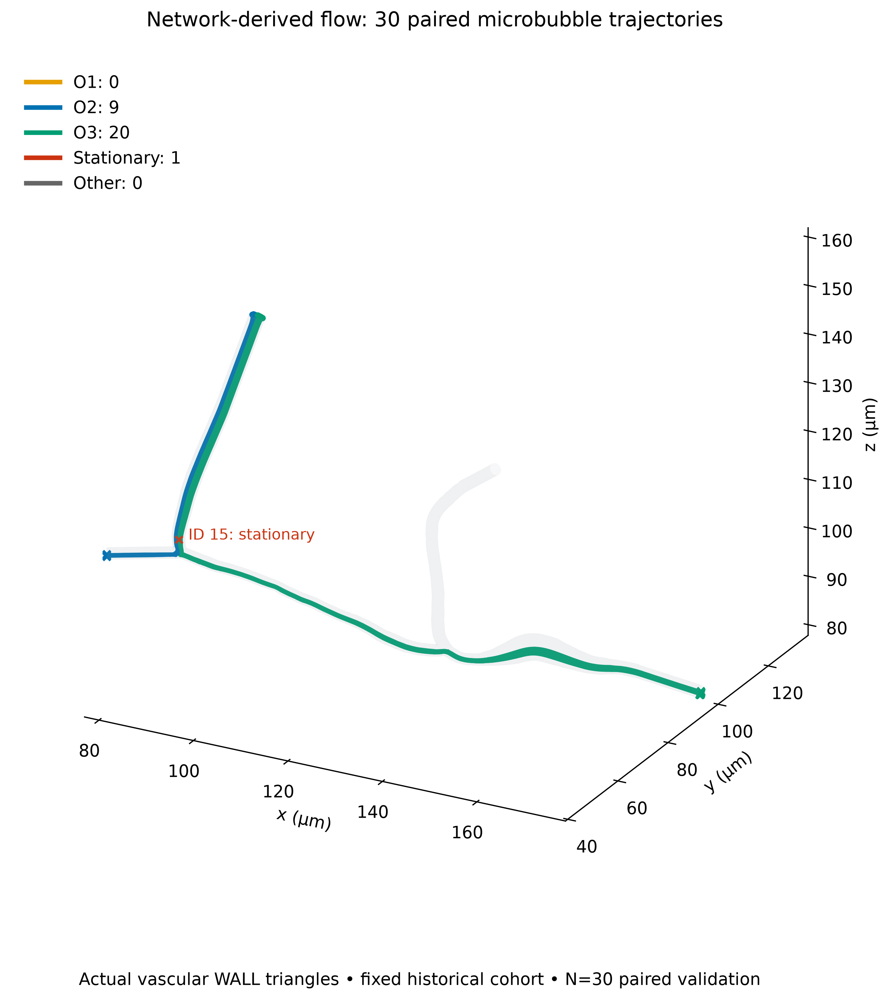
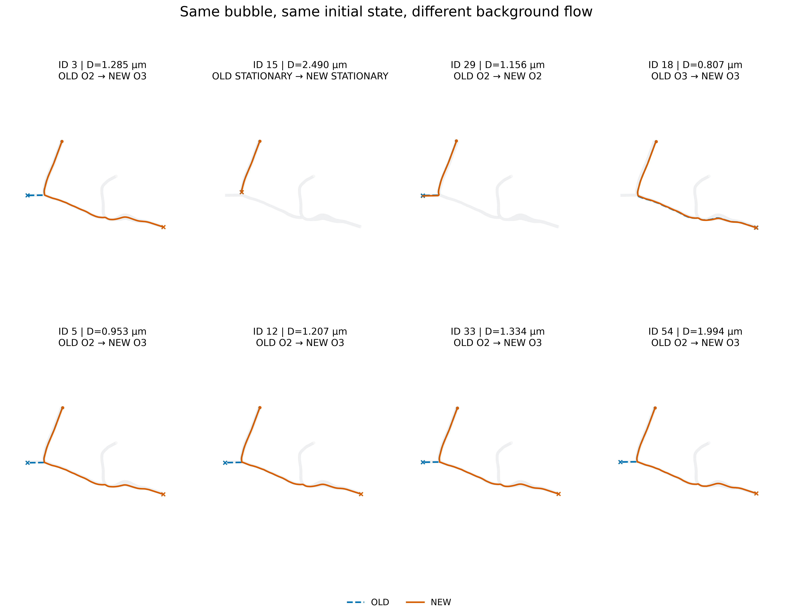
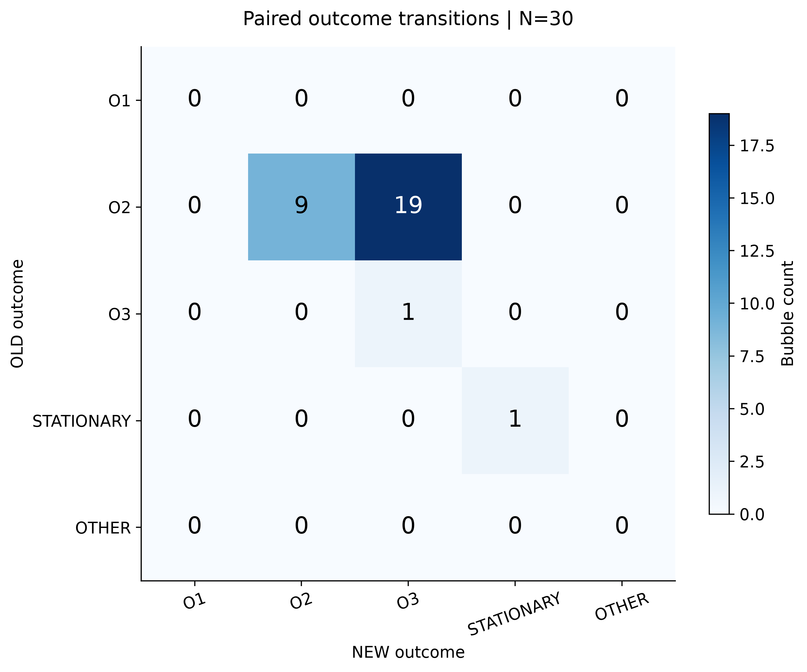
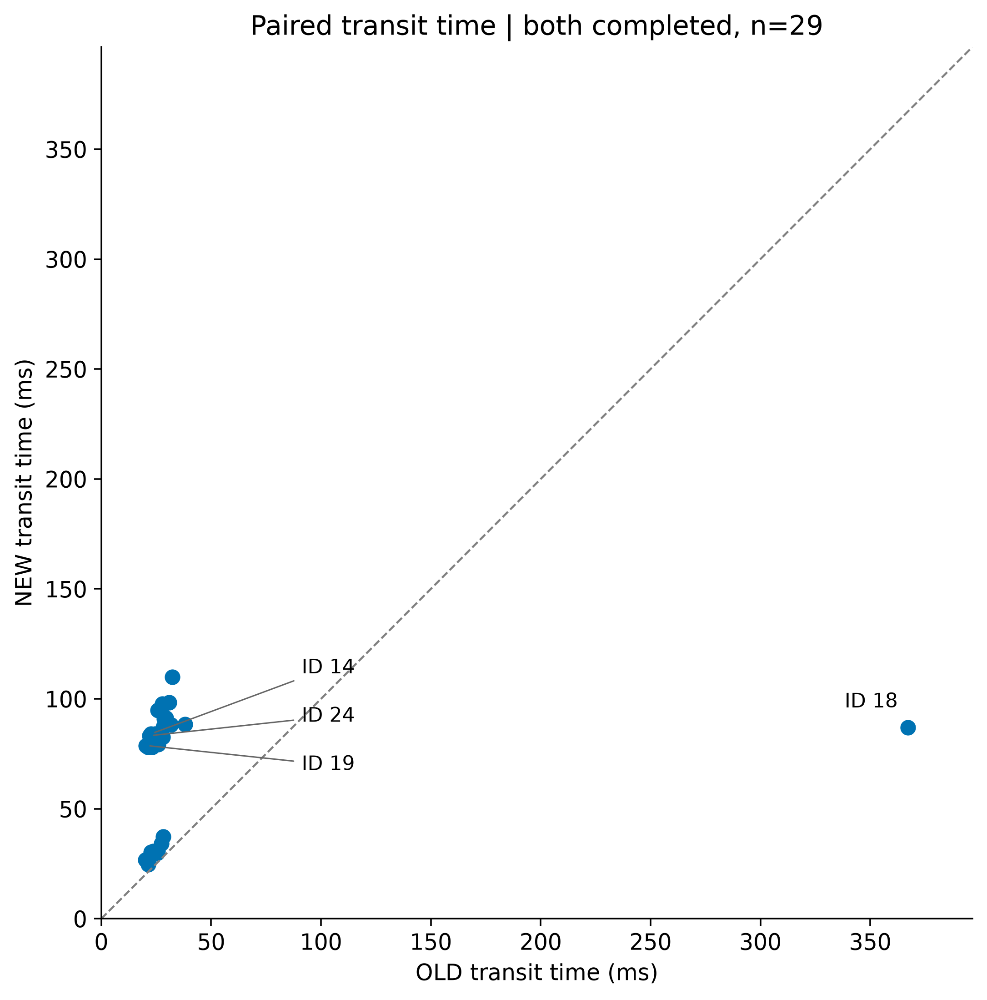
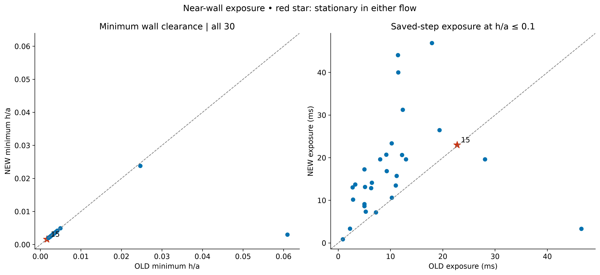
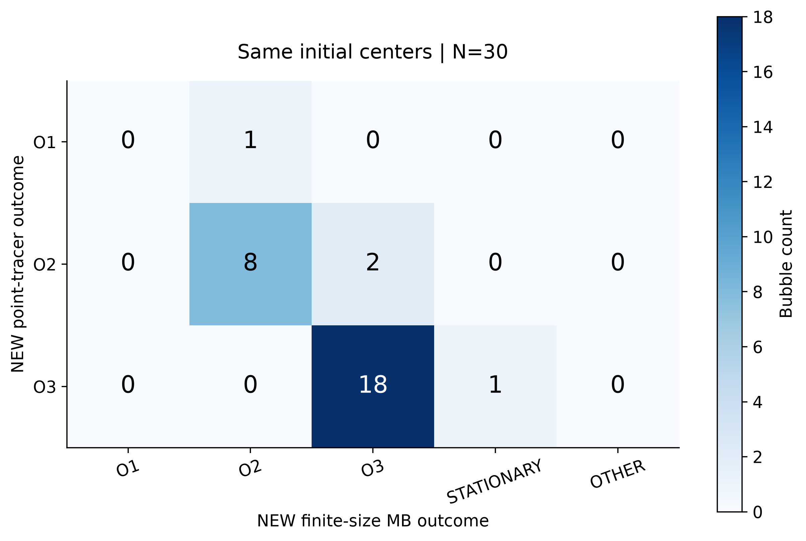
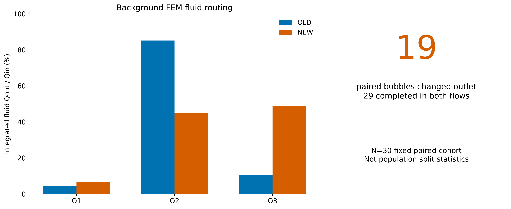

Network-derived flow：30 泡配对验证
OLD / NEW 均 29 completed、1 stationary、0 solver fail；19 颗 O2→O3。N=30 不能当作 population split。
中文主报告 · 机器可读汇总
01_new_flow_30_tracks
PDF

02_paired_old_new_trajectories
PDF

03_paired_outcome_transition
PDF

04_transit_time_paired
PDF

05_minimum_gap_and_nearwall_exposure
PDF

06_point_tracer_vs_microbubble
PDF

07_fluid_split_and_paired_route_changes
PDF
